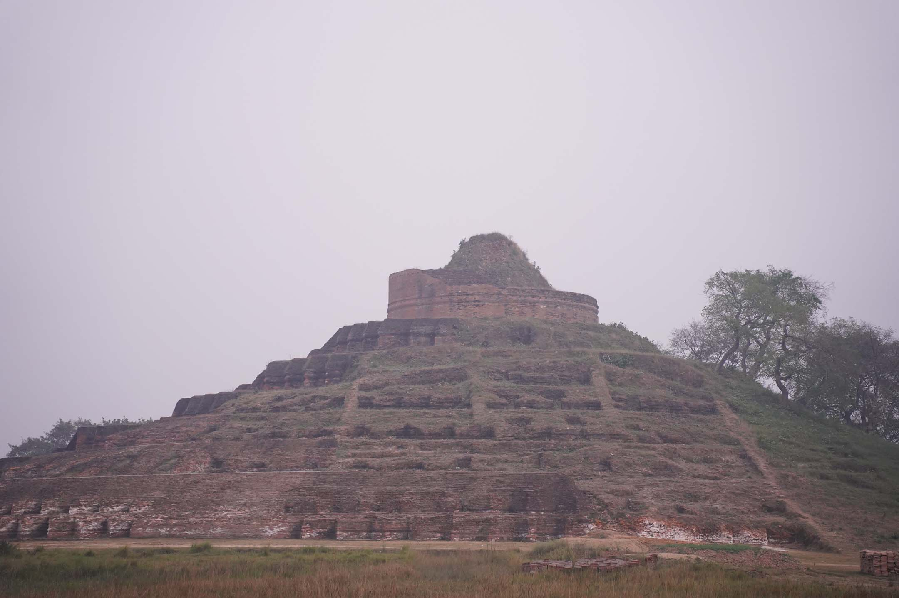
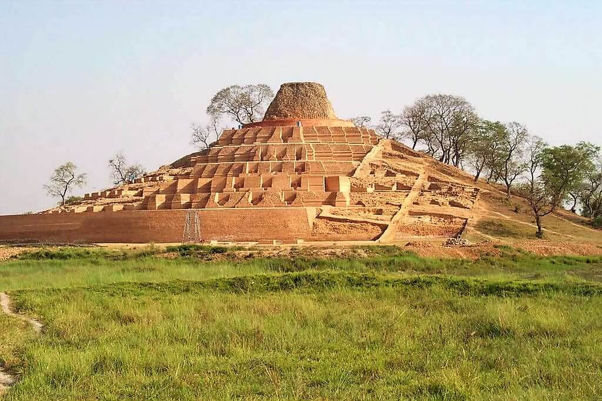
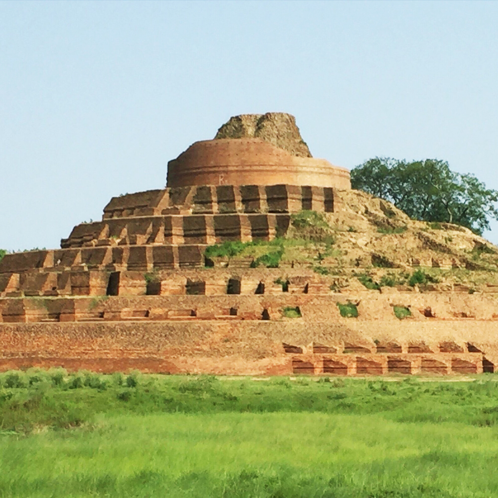

About Kesariya Stupa
Kesariya Stupa in East Champaran is a vast terraced Buddhist monument, among the largest stupas in India. ASI excavations uncovered concentric terraces and Buddha images that once rose far higher than the mound visible today.
Tradition holds that the Buddha halted here on his last journey and gave his alms bowl to the Licchavis of Vaishali. The present brick structure is largely Gupta-period, built over earlier remains.
Historical Significance
Chinese pilgrim accounts and later archaeology connect Kesariya with the Licchavi farewell. The stupa is not the site of the Buddha's parinirvana (that is Kushinagar), but an important stop on the same final route through north Bihar.
Architecture
The monument is a stepped, circular stupa with multiple terraces. Much of the original facing has eroded, but the excavated profile still shows the scale of the brick core, niches, and seated Buddha figures on the terraces.




Visitor Information
The stupa is a short drive from Motihari in East Champaran. There is little shade on the mound, so visit in the cooler months from October to March and carry water. Combine the stop with Vaishali if you are following the Buddhist circuit.
← Back to Destinations